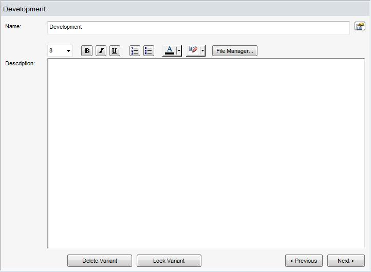

at the top right of the dialog opens the property dialog for the variant.
at the top right of the dialog opens the property dialog for the variant.
Right Side of Tree Node for a Variant
Shows the name of the variant.
Shows the description of the variant.
The "Properties" button at the top right of the dialog opens the property dialog for the variant.
Deletes the variant (with confirmation).
Locks the variant (with confirmation).